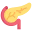

Mineral Grimoire
Black Moonstone

PancreasAppearance
Black-grey. Black-grey streaky opaque to translucent stone. Easily obtained.
Origin
Madagascar, India, Sri Lanka, Myanmar, Australia
Attributes
The trade name for a type of Labradorite, Black Moonstone is excellent for metaphysical pursuits of all kinds as it protects and opens your energy field to higher vibrations. If you need a mentor or spiritual guardian, hold Black Moonstone and ask that a suitable guide comes to you from higher dimensions or in the physical realm. Holding a powerful connection to the divine feminine, it links to the transformative energy of the Black Madonna or the Magdalene.
Black Moonstone screens out the undesirable effects of electromagnetic emanations, especially mobile phones, computers and WiFi, and blocks radiation and X-rays. Assisting those who are emotionally over-sensitive, it filters the energetic information you pick up from other people so that you only perceive what is useful. Grid Black Moonstone around your home to attract abundance and to create a calm, serene atmosphere. It stabilizes rocky relationships and assists during teenage angst. This stone strengthens concentration so use it for study or creativity.
Physically, Black Moonstone increases your stamina and assists accident prone or dyspraxic children to be more focused with better co-ordination. It helps adults who have motor difficulties or who lack concentration to better focus their attention.
Healing
Black Moonstone is reputedly helpful for the colon, kidneys, liver, spleen, stomach and female reproductive organs. It may stimulate recovery from a stroke and be beneficial for Parkinson's and similar diseases. Moonstone is traditionally used to balance the female hormonal cycle and assist during menopause.
Position
Hold, place or grid as appropriate.
Additional Notes
Trade name for type of Labradorite. Screens electromagnetic emanations from phones, computers and WiFi. Blocks radiation and X-rays.
Spellworking
Combining labradorite's protective qualities with moonstone's intuitive properties, Black Moonstone shields against electromagnetic pollution while accessing higher dimensions. Use it for protection during metaphysical pursuits and connecting with divine feminine energy. As an opaque to translucent stone, it bridges physical protection with spiritual insight.
Magickal Properties
As a member of the feldspar mineral group, black moonstone displays a distinctive opalescent sheen called adularescence, created by alternating layers of orthoclase and albite refracting light. Recently discovered in Madagascar, this variety carries all the properties of white or rainbow moonstone, but its darker hue and deeper vibration add grounding and protective qualities. Ancient Romans believed moonstone formed when moonbeams fell to Earth and solidified. What distinguishes black moonstone is its dark exterior paired with a silvery-green sheen, opalescent luster, and veins of peach, grey, brown, white, yellow, and orange. Often confused with  Labradorite or larvikite, it stands as a crystal of its own, radiating grounding, protective, creative, and potential-rich energy. Connected to the dark moon (new moon), it carries the air of unlimited possibility. Moonstone in any form represents birth, completion, celebration, and manifestation. In India, it is associated with the goddesses of the Hindu pantheon, representing mystery, sensuality, and the watery cycles of nature. Working with moonstone at the full moon honors the gifts you have received, while meditating with any variety connects you with matrilineal healing gifts and the wisdom of the women who came before you.
Labradorite or larvikite, it stands as a crystal of its own, radiating grounding, protective, creative, and potential-rich energy. Connected to the dark moon (new moon), it carries the air of unlimited possibility. Moonstone in any form represents birth, completion, celebration, and manifestation. In India, it is associated with the goddesses of the Hindu pantheon, representing mystery, sensuality, and the watery cycles of nature. Working with moonstone at the full moon honors the gifts you have received, while meditating with any variety connects you with matrilineal healing gifts and the wisdom of the women who came before you.
Chakra Work
Black moonstone is an ideal companion during new moon work, when the sky is dark and anything feels possible. Keep it close while setting intentions, allowing it to bring clarity and support to your innermost visions. Place it in your home, car, or any space where you wish to channel gentle grounding and protective energy. Hold it against any part of the body in need of soothing and relief. It activates the Root and Crown Chakras, grounding you into the physical plane after spiritual work while keeping a channel open to the higher realms. For beginners, it helps clearly visualize goals, enhances mental focus, relieves stress, boosts fertility, and uplifts the spirit. It heals the emotional body, strengthens self-worth, and deepens trust in your instincts. For advanced practitioners, black moonstone deepens psychic gifts and supports the development of clair-abilities such as clairvoyance, clairaudience, and clairsentience. It propels astral travel and facilitates channeling messages from higher beings. You may notice increased synchronicities and a feeling of deeper connection to something beyond ordinary time and space. It also aids manifestation, providing clarity, guidance, and gentle protection as you work to bring your innermost dreams to life.
Correspondences
Black moonstone partners well with  Amethyst, Black Jade,
Amethyst, Black Jade,  Labradorite,
Labradorite,  Moldavite, and Selenite. It is associated with Cancer, Libra, and Scorpio, and has a Monoclinic crystal structure.
Moldavite, and Selenite. It is associated with Cancer, Libra, and Scorpio, and has a Monoclinic crystal structure.
Colors
Despite its name, black moonstone is not truly black. Its exterior appears dark grey to black, but under light it reveals a striking silvery-green sheen with opalescent luster. Veins of peach, grey, brown, white, yellow, and orange thread through the stone, making each specimen unique.
Magickal Message
"Find beauty in the darkness; see it not as a void but as a blank slate. Right now, anything is possible. Embrace your innermost visions and know that they are yours to manifest."
Care
With a Mohs hardness of 6 to 6.5, black moonstone is reasonably durable for everyday use. Cleanse with moonlight (particularly during the new moon to align with its energy), sound, or running water. Avoid prolonged sun exposure to preserve its sheen. This crystal makes a wonderful gift for soon-to-be parents, artists, or anyone in the process of birthing something new.